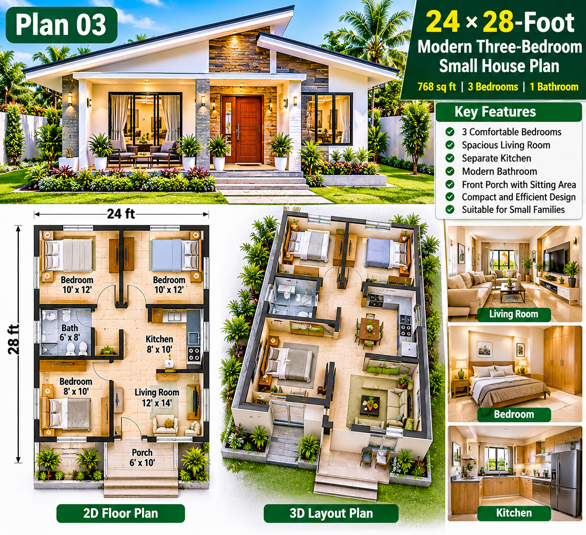

SMALL HOUSE PLANS · ARTICLE 03
24 × 28-Foot Modern Three-Bedroom Small House Plan
A Compact Family Home Concept with Three Bedrooms, Separate Kitchen, 2D Floor Plan and Furnished 3D Layout

Three bedrooms in a compact home require careful planning. This 24 × 28-foot concept explores a single-storey arrangement with three sleeping rooms, one shared bathroom, a living area, a separate kitchen and a covered front porch. It is intended as a starting point for families who need flexible sleeping or work space on a limited plot.
1. Design Overview
The key difference in this plan is its third bedroom. Instead of a large open-plan arrangement, the concept prioritizes three private rooms and a clearly defined kitchen. The final design should balance bedroom sizes with a comfortable shared living area and safe circulation.
2. Planning the Three Bedrooms
The main bedroom can be planned for a double bed and wardrobe. The second bedroom can serve another family member or guests. The third, smaller bedroom can work as a child's room, study or flexible guest space. The exact room sizes should be adjusted together on the measured drawing rather than copied independently from the illustration.
- Allow usable access on the sides of beds where possible.
- Place wardrobes where their doors do not obstruct room entrances.
- Provide an external window for daylight and ventilation in each bedroom where site conditions allow.
- Use compact furniture and built-in storage to preserve circulation.
3. 2D Floor Plan and Room Zoning
A practical starting arrangement places the bedrooms in a quieter zone and keeps the living room close to the front entrance. The bathroom should be reached from a short internal passage. The separate kitchen should connect conveniently to the living or dining area without becoming the main route to the bedrooms.
The final 2D drawing should clearly show the 24-foot and 28-foot external dimensions, internal room sizes, wall thicknesses, door swings, window openings and furniture footprints. Check that all doors can open fully and that there is a clear route from the entrance to every room.
4. Living Room Layout
A compact sofa, wall-mounted television and small coffee table can create a comfortable family area. If a dining table is needed, consider a small two- or four-seat arrangement only after confirming the remaining clear floor area. Avoid blocking the entrance or the passage to the bedrooms.
5. Separate Kitchen Design
A straight or compact L-shaped counter can make good use of a small kitchen. Arrange the refrigerator, sink, preparation surface and cooktop for a convenient workflow. Include overhead storage, task lighting and suitable ventilation. Confirm appliance clearances before finalizing cabinet dimensions.
6. Shared Bathroom
The bathroom should provide a toilet, washbasin and shower area with a door that does not clash with fixtures. Use non-slip flooring, proper waterproofing and suitable floor falls. Provide a privacy window or mechanical exhaust ventilation to control moisture.
7. Door, Window and Ventilation Planning
- Connect the front porch to the living area through the main entrance.
- Arrange bedroom doors from a short passage to improve privacy.
- Check door swings against beds, wardrobes and bathroom fittings.
- Use external windows to bring daylight and cross-ventilation into habitable rooms.
- Provide suitable kitchen and bathroom extraction.
8. Furnished 3D Layout
The 3D top view should be developed from the same dimensioned 2D plan. Use it to test bed positions, wardrobes, sofa placement, kitchen counters and the walking route between spaces. A 3D render is useful for understanding the room arrangement, but it does not replace accurate dimensions or technical drawings.
9. Modern Exterior Design
The illustrated exterior uses a modern tropical character with light wall finishes, stone-look accents, a prominent entrance, shaded windows and a covered porch. Low-maintenance planting can soften the front elevation. Choose durable finishes suited to local sun, rain and maintenance conditions.
10. Roof and Rainwater Management
A simple pitched roof is one possible approach. The roof design should specify its pitch, framing, covering, insulation, gutters, downpipes and safe discharge of rainwater. A qualified professional must size the structure and connections for local wind and weather conditions.
11. Electrical and Plumbing Planning
Plan room lighting, switches and socket outlets before plastering. Allow suitable electrical points for kitchen appliances, refrigerator, television and bedside use. Electrical work should comply with local standards and be checked by a qualified electrician.
Keep the kitchen and bathroom plumbing routes practical. Confirm water supply, drainage gradients, access to valves, waterproofing and ventilation before construction begins.
12. Construction Stages
- Survey the land and confirm boundaries, levels, access and required setbacks.
- Check ground conditions and obtain a suitable foundation design.
- Set out and construct the approved foundation.
- Complete floor preparation and structural work.
- Build walls and install designed structural elements.
- Install the roof frame, covering and rainwater system.
- Complete first-fix electrical and plumbing work.
- Apply plastering, waterproofing and protective finishes.
- Install doors, windows, flooring, ceilings and fittings.
- Complete painting, external works, testing and final inspection.
13. Materials and Budget Checklist
Actual costs depend on the site, soil, structural design, material specifications, labour rates and finishing level. Prepare a local estimate from the final measured drawings and current supplier quotations.
- Site preparation and foundation
- Concrete, reinforcement and structural work
- Blocks or bricks, mortar and plaster
- Roof frame, covering, insulation and gutters
- Doors, windows and hardware
- Electrical wiring, fittings and testing
- Water supply, drainage and bathroom fixtures
- Kitchen cabinets and worktops
- Flooring, ceilings and paint
- Labour, transport, approvals and contingency
14. Is This Plan Suitable for Your Family?
This concept may suit a family that values three separate sleeping spaces more than oversized shared rooms. The third room can also become a home office or guest room as needs change. Before choosing the design, confirm the actual plot dimensions, required setbacks, access, drainage and local approval rules.
Conclusion
The 24 × 28-foot three-bedroom concept offers a different direction from the earlier two-bedroom plans. Its focus is flexible family accommodation within a compact footprint. The next step is to develop a coordinated scaled drawing that fits the land and meets local building requirements.
DreamHome Plans – Plan Better. Build Smarter. Live Better.
← Back to Small Houses